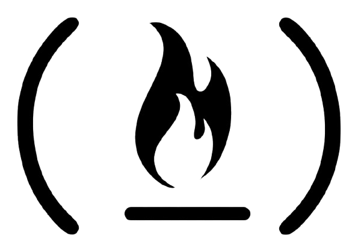

MÓDULOS DEL CURSO
freeCodeCamp · JavaScript Development
La presente página web es para consolidar todos los proyectos que se realizan a lo largo de la certificación -- desde los proyectos normales hasta los que otorgan certificación
83 proyectos 10 de certificación
